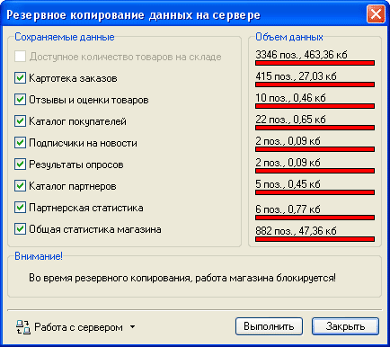

Резервное копирование данных, хранящихся на сервере, осуществляется силами его владельцев, однако в ряде случаев может быть полезно самостоятельное резервное копирование серверной базы данных владельцем магазина.
Выбор подменю "Утилиты - Серверная база данных - Резервное копирование базы данных" приводит к появлению окна, в котором следует указать сохраняемые данные из списка предложенных и нажать кнопку «Выполнить».

На время выполнения резервного копирования работа серверной части магазина блокируется.
В завершение файлу-архиву присваивается имя вида "Server_GGGG_MM_DD.zip" (где GGGG-год, MM-номер месяца,DD-число), запрашивается место для его сохранения и выдается сообщение о завершении:
Полученный файл-архив содержит выбранные для сохранения данные в XML формате, что позволяет использовать данную утилиту также и для экспорта этих данных в другие программы.
Следует понимать, что резервное копирование серверной базы данных не касается данных, хранящихся на локальной машине с установленной программой Melbis Shop. Создание резервной копии данных, хранящихся на локальной машине, см. Резервное копирование локальной базы данных.